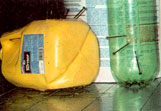
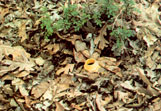

I was at dinner with friends when the discussion came around to the pockets of low rainfall in our area. Our tomatoes were taking a terrible beating, and it showed in their withered leaves and poor fruit.
One fellow suggested placing plastic containers (gallon jugs or 2-liter beverage containers) in the ground at the time of planting. Punch holes in the bottoms and sides of the containers with a finishing nail or a drill, bury them with a few inches showing and fill with each watering; their narrow mouths almost eliminate water loss due to evaporation. Also, if you punch just a dozen or so small holes, the slow draining of the water into nearby soil gives plants more time to drink up.
If you must place fertilizer in these reservoirs, make it one quarter the strength or weaker to avoid burning roots.
Frank Abair, Jr.
Greenfield, Tennessee
|
 FRANK ABAAIR, JR. Punch drainage holes in the bottom of the plastic containers. |
 FRANK ABAAIR, JR Bury the container next to the plant with just the top of the jug protruding above the ground. |
|